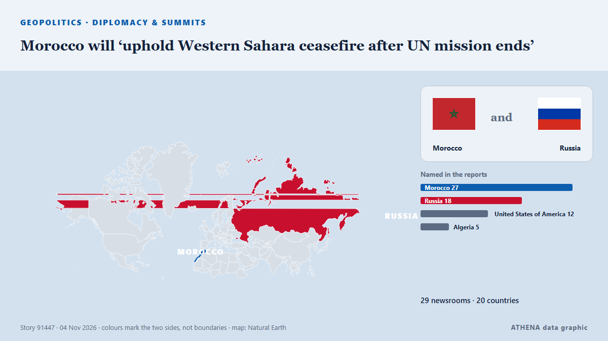

Morocco will ‘uphold Western Sahara ceasefire after UN mission ends’

Morocco will stay committed to the ceasefire in the occupied Western Sahara despite the end of the United Nations peacekeeping mission in the territory, the Royal Palace said on Wednesday. de Cyprus Mail
Relayé de façon indépendante par 29 médias dans 20 pays depuis le 1 nov. ; premier à l'annoncer : UN News ; la couverture faiblit. ATHENA juge le risque faible (1.3/10), surtout en raison de la gravité des dommages décrits et de sa portée géographique et sectorielle. La confiance est de 91 % (élevée) : 29 médias indépendants le confirment, avec une fiabilité moyenne des sources de 77 %. Médias par pays : États-Unis (5), Maroc (4), Qatar (3). Couverture : du 1 nov. au 5 nov., 98 heures.
Pourquoi c'est important: Les évolutions de sécurité et de diplomatie peuvent déplacer alliances, échanges et marchés bien au-delà des pays directement concernés.
Ce qui a changé : 7 nouveaux articles de 7 rédactions dans les 24 heures jusqu'au 5 nov..
Premier titre : UN begins liquidation of MINURSO after Security Council fails to renew mandate
Les titres sont affichés en anglais, tels que publiés.
En un coup d'œil
Sélectionné, noté et rédigé par la méthodologie publiée d'ATHENA. Aucun rédacteur n'intervient sur un événement en particulier. Comment il est produit ›
| 01 Nov 12:00 UTC | 5 |
|---|---|
| 01 Nov 18:00 UTC | 8 |
| 02 Nov 00:00 UTC | 7 |
| 02 Nov 06:00 UTC | 6 |
| 02 Nov 12:00 UTC | 5 |
| 02 Nov 18:00 UTC | 2 |
| 03 Nov 00:00 UTC | 0 |
| 03 Nov 06:00 UTC | 0 |
| 03 Nov 12:00 UTC | 0 |
| 03 Nov 18:00 UTC | 0 |
| 04 Nov 00:00 UTC | 0 |
| 04 Nov 06:00 UTC | 0 |
| 04 Nov 12:00 UTC | 0 |
| 04 Nov 18:00 UTC | 3 |
| 05 Nov 00:00 UTC | 1 |
| 05 Nov 06:00 UTC | 2 |
| 05 Nov 12:00 UTC | 1 |
| 01 Nov 13:08 UTC | 4.3 |
|---|---|
| 01 Nov 15:26 UTC | 3.0 |
| 01 Nov 16:48 UTC | 4.8 |
| 01 Nov 18:33 UTC | 5.8 |
| 01 Nov 21:15 UTC | 4.8 |
| 01 Nov 23:50 UTC | 6.2 |
| 02 Nov 00:00 UTC | 5.6 |
| 02 Nov 01:31 UTC | 4.5 |
| 02 Nov 17:24 UTC | 1.3 |
| 05 Nov 14:10 UTC | 1.3 |
Pourquoi ces chiffres
Importance
Risque
Confiance
La couverture : qui l'a annoncé, et quand
titre tel que publié · ouvre l'original- UN News · États-UnisWestern Sahara: UN ‘stands ready’ to keep supporting peace efforts as MINURSO mission ends
- Hespress English · MarocUN begins liquidation of MINURSO after Security Council fails to renew mandate
- Al Jazeera English · QatarWhy is Morocco celebrating the defeat of a UN resolution on Western Sahara?
- Anadolu Agency (English) · TurquieUN chief warns of escalation in Western Sahara after peacekeeping mandate ends
- TRT World · TurquieUN raises alarm over violence in Western Sahara after peacekeeping mandate expires
- The New Arab · INTUN announces liquidation of MINURSO Western Sahara mission
- ABC News (International) · États-UnisUN’s peacekeeping mission in Western Sahara ends after 35 years following US-Russia standoff
- The Straits Times · SingapourUN peacekeeping mission in Western Sahara ends after 35 years, UN chief says
- France 24 English · FranceUN’s peacekeeping mission in disputed Western Sahara ends after 35 years
- Arab News · Arabie saouditeUN’s peacekeeping mission in Western Sahara ends after 35 years following US-Russia standoff
- Hespress English · Maroc“Morocco is not waiting”: Experts say UN deadlock marks shift in Sahara policy
- Al Jazeera English · QatarUN warns of security risks in Western Sahara as peacekeeping mission ends
- Free Malaysia Today · MalaisieUN peacekeeping mission in Western Sahara ends after 35 years
- BusinessWorld · PhilippinesUN peacekeeping mission in Western Sahara ends after 35 years, UN chief says
- Daily Maverick · Afrique du SudUN peacekeeping mission in Western Sahara ends after 35 years, UN chief says
- Club of Mozambique · MozambiqueUN peacekeeping mission in Western Sahara ends after 35 years, UN chief says
- MyJoyOnline · GhanaUN peacekeeping mission in Western Sahara ends after 35 years, UN chief says
- Ada Derana · Sri LankaUN peacekeeping mission in Western Sahara ends after 35 years, UN chief says
- AllAfrica · AFRWestern Sahara: U.S. and Russia Block Competing UN Resolutions On Western Sahara
- APP (Associated Press of Pakistan) · PakistanUN peacekeeping in Western Sahara abruptly ends after 35 years amid US-Russia standoff
- NPR · États-UnisUN's peacekeeping mission in disputed Western Sahara ends after 35 years
- SABC News · Afrique du SudUN peacekeeping mission in Western Sahara has ended: Guterres
- The Citizen (Tanzania) · TanzanieUN peacekeeping mission in Western Sahara ends after 35 years
- Arab Times · KoweïtUN’s peacekeeping mission in Western Sahara ends after 35 years following US-Russia standoff
- Africanews (English) · AFRUN peacekeeping mission in Western Sahara ends after 35 years
- Hespress English · MarocOver three decades in the Moroccan Sahara: The millions MINURSO spent without delivering
- The Independent · Royaume-UniUN brings 35-year Western Sahara peacekeeping mission to a close
- Hespress English · MarocMorocco's upper house speaker urges Tindouf camp residents to return home after MINURSO closure
- GBC Ghana Online · GhanaUN peacekeeping mission in Western Sahara ends after 35 years following US-Russia standoff
- SABC News · Afrique du SudUN begins dismantling peacekeeping mission in Western Sahara
- TASS (English) · RussieRussia opposes ultimatum-based solutions to Western Sahara issue — MFA
- The National · Émirats arabes unisUN begins shutting down Sahara region peacekeeping mission after 35 years
- Al Jazeera English · QatarWhat’s the future of the Western Sahara conflict?
- The Straits Times · SingapourMorocco says it will uphold Western Sahara ceasefire after UN mission ends
- Cyprus Mail · ChypreMorocco will ‘uphold Western Sahara ceasefire after UN mission ends’
- Al-Monitor · États-UnisMorocco says it will uphold Western Sahara ceasefire after UN mission ends
- MyJoyOnline · GhanaMorocco says it will uphold Western Sahara ceasefire after UN mission ends
- The Citizen (Tanzania) · TanzanieMorocco says it will uphold Western Sahara ceasefire after UN mission ends
- Africanews (English) · AFRMorocco say it remains committed to Western Sahara ceasefire as peacekeeping mission ends
- ABC News (International) · États-UnisUN's peacekeeping mission in Western Sahara enters liquidation phase after mandate expires